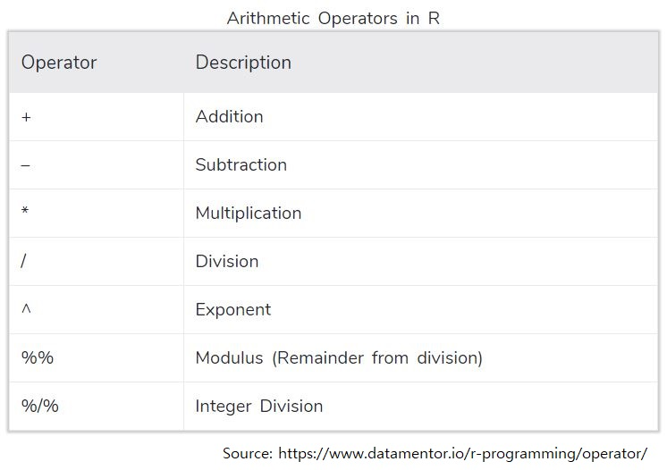
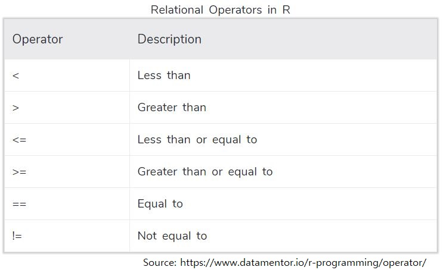

#install.packages("readxl")
#install.packages("tidyverse")
library(readxl)
library(tidyverse)
trail_df<-read_excel("data/trail_df1.xlsx")תרגיל 2 - היכרות עם Data frames
1. להתכונן
נתקין את חבילות Tidyverse ו-readxl
נטען את חבילות Tidyverse ו-readxl
נטען ל-R את הקובץ trail_df1.xlsx ונקרא לו trail_df.
Show R code
2. בחינה כללית של משתנים
בדקו את ה-class של המשתנים age, diabetes, group .
בדקו את ה-class של האובייקט trail_df.
Show R code
class(trail_df$age)
class(trail_df$diabetes)
class(trail_df$group)
class(trail_df)👈 דרך מהירה להתבונן בכל המשתנים ב-DF שלנו היא בעזרת שתי הפקודות glimpse ( מתוך חבילת tidyverse) ו-summary.
נסו את שתי הפקודות האלו על trail_df
Show R code
glimpse(trail_df)
summary(trail_df)3. יצירת משתנה חדש עבור BMI הגישה של tidyverse בעזרת Pipe
אנחנו נעבוד הרבה (מאד) עם tidyverse לאורך הקורס. כעת נתחיל את הצעדים הראשונים שלנו ונעבוד עם הפונקציה mutate ועם pipe - שמסומן ככה %<% או ככה <|
- צרו משתנה חדש שנקרא height_m שממיר את הגובה בס”מ למטרים
- צרו משתנה חדש בשם bmi שמחשב את ה-BMI בעזרת המשתנה height_m ו-weight.
BMI=weight/(height)2
שמרו את ה-df בשם חדש trail_df2
- צרו היסטוגרמה מהירה של המשתנה החדש
Show R code
trail_df2 <- trail_df %>% # take the trail_df, copy it to a new df and than...
mutate(height_m=height/100) %>% # create a new variable for height_m and than...
mutate(bmi=weight/ height_m^2) # calculate BMI
# let's make this code even shorter
trail_df2 <- trail_df %>% # take the trail_df, copy it to a new df and than...
mutate(bmi=weight/(height/100)^2)
hist(trail_df2$bmi)הפעולות האריתמטיות הנפוצות שאפשר לעשות ב-R

👈לכתוב %<% זה מעצבן אז כדאי להכיר את קיצור המקלדת Ctrl + Shift + M
4. יצירת משתנה חדש עבור BMI - גישת R base
העתיקו את trail_df לאובייקט חדש וקראו לו trail_df3.
ניצור כעת את אותו משתנה BMI בגישת R base
👈 זו השיטה הישנה יותר לעשות פעולות כאלו אנחנו כמעט לא נעבוד באופן הזה.
Show R code
trail_df3<- trail_df
trail_df2$height_m<-trail_df2$height/100
trail_df2$bmi<-trail_df2$weight/trail_df2$height_m^25. בחירת משתנים ושינוי שם: rename, select
ניצור DF חדש בשם trail_df_select_rename על בסיס trail_df2
- נשנה את השם של המשתנה age ל- age_years
- נבחר את המשתנים sex, age_years ו-bmi
- ניצור משתנה חדש age_days
- נוריד רק את המשתנה age_years מה-df
Show R code
trail_df_select_rename <- trail_df2 %>% # take trail_df2 and than...
rename(age_years=age) %>% #rename age and than...
select(sex, age_years,bmi) %>% # select only specific vars and than...
mutate(age_days=age_years*365) %>% # create a new var and than...
select(-age_years) # remove age_years variable6. סינון: filter
ניצור DF חדש בשם trail_df_filtered על בסיס trail_df2
- נשאיר רק משתתפים עם BMI תקין (מתחת ל-25)
- ננסה לשנות את התנאי כך שיכלול גם משתתפים עם BMI 25
- נשאיר רק את אלו עם מחלת לב
- נוריד מה-DF את קבוצת הביקורת
- ננסה לעשות את הכל בשלב אחד ונתנסה בשימוש ב-AND (“&” בקוד R)
- נחליף את ה-AND ב-OR (“|” בקוד R) ונקרא ל-df הנוסף trail_df_filtered2
טבלה של כל האופרטרים ב-R

Press to show R code
#filter out exclusion createra
trail_df_filtered <- trail_df2 %>%
filter(bmi<25)
trail_df_filtered <- trail_df2 %>%
filter(bmi <=25) %>%
filter(CVD ==TRUE) %>%
filter(group !="control")
#in one step:
trail_df_filtered <- trail_df2 %>%
filter(bmi <=25 & CVD ==TRUE & group !="control")
trail_df_filtered2 <- trail_df2 %>%
filter(bmi <=25 | CVD ==TRUE | group !="control")נפטר מ-trail_df בעזרת rm.
Show R code
rm(trail_df)